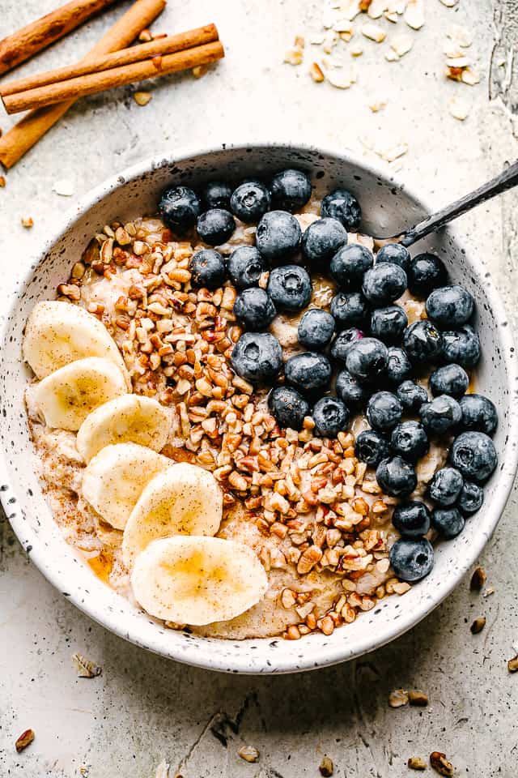

Oatmeal-Almond Protein Pancakes

Description
Powdered peanut butter is a handy pantry staple that makes a great vegan protein booster for oatmeal and smoothies. Double or triple this recipe to meal-prep breakfasts for the week or to have breakfast ready for the entire family.
Ingredients
- ½ cup soymilk or other plant-based milk
- ½ cup old-fashioned rolled oats (see Tip)
- 1 tablespoon pure maple syrup
- 1 tablespoon chia seeds
- 1 tablespoon powdered peanut butter
- Pinch of salt
- ½ medium banana, sliced, or 1/2 cup berries
Steps
- Step 1.
Stir soymilk (or other milk)sal, oats, syrup, chia, powdered peanut butter and salt together in a 2-cup mason jar. Refrigerate overnight.
- Step 2.
Serve topped with banana or berries